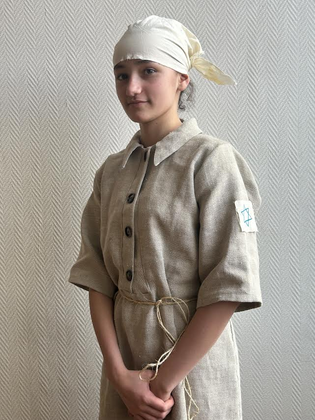
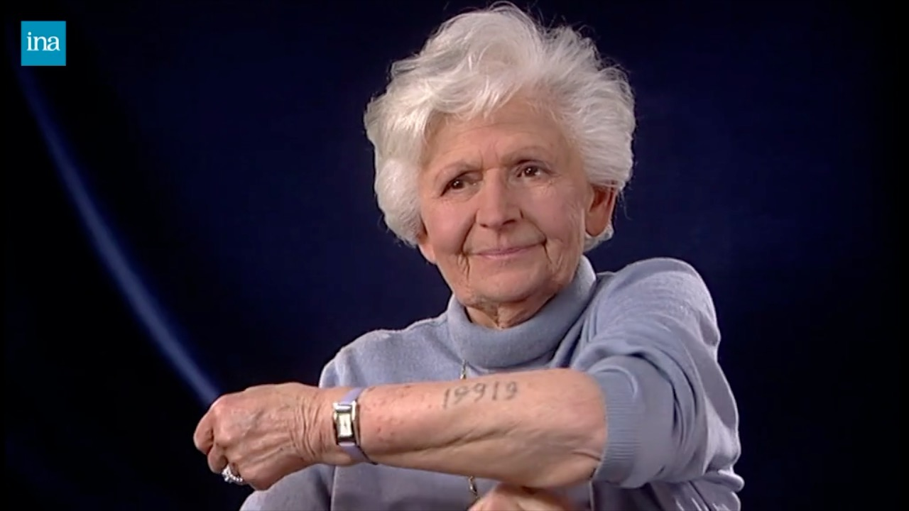

La robe : 2 ans et demi dans les camps
Description :
Dans les camps de concentration, les déportés portaient des tenues rayées mais également des tenues dites civiles. Sur ces dernières, des inscriptions ou des « morceaux » de tissu rayé étaient insérés, pour éviter les évasions. Le numéro matricule et le triangle (selon la « catégorie » des déportés : politique, droit commun, homosexuel, apatride, tsigane…) y étaient cousus. L’état des vêtements était variable.
De septembre 1942 à mai 1945, Frieda survit dans les camps, elle reconnaît avoir eu une chance inouïe. Elle parvient au centre d’Auschwitz en septembre 1942 par le transport X. Elle échappe à la sélection pour les chambres à gaz grâce à sa maîtrise de l’allemand : sur la rampe, elle a pu renseigner 2 officiers SS qui s’interrogeaient sur la provenance des déportées. Ses parents n’ont pas la même chance; ils sont dirigés directement vers la mort.
Un responsable décide de la protéger et lui propose de devenir couturière. Elle est tatouée du numéro 19919 et rasée. Le but est de les déshumaniser. Frieda a encore une fois de la “chance”, on lui laisse une mèche de cheveux, ses chaussures et son pull-over. Elle souffre des conditions de détention : dysenterie, famine, absence de robinet (1942), ... Elle dort sur une paillasse dans le block aryen (il regroupe les juifs qui travaillaient dans les bureaux). Cela l’a sans nul doute aidé à
survivre.
.

